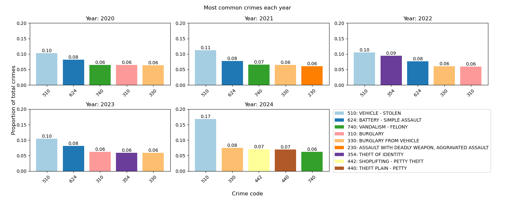
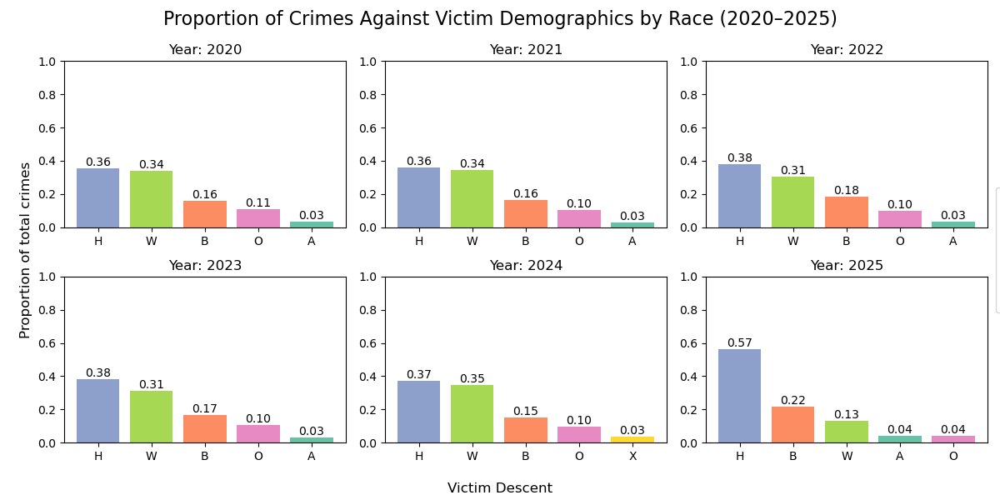

Understanding how crime is distributed across Los Angeles is essential for identifying patterns that can inform public safety strategies, law enforcement resource allocation, and community awareness efforts. Los Angeles is a large and diverse city, with varying socioeconomic, demographic, and geographic characteristics that may influence the frequency and type of crimes occurring in different areas. By analyzing the distribution of crimes — such as theft, burglary, identity theft, and assault — we can uncover whether certain neighborhoods or population groups are more vulnerable to specific types of crime. This analysis can help policymakers and local authorities develop targeted interventions to reduce crime rates, improve safety, and promote equity in public protection across the city.
We started our project by pre-processing the data: filtering out missing values and values that do not make sense (i.e the date of crime occurrence being after the date reported), converting date/time columns to a compatible format, removing redundant columns, and selecting the amount of data we want to work with. After pre-processing the data, we went onto our tasks of exploring the distribution of crime data, checking how different demographics, age groups, and geographic locations were impacted using Altair and Pandas. We finished off by analyzing how crime varies by victim age and time of day using D3.
Crime Data from 2020 to Present (data.gov)
The dataset we are analyzing covers crime data from 2020 to present day in the city of Los Angeles and was taken from data.gov, The Home of the U.S. Government's Open Data. The dataset contains 1,004,992 rows and 28 columns, including the following features: division of records file number, date reported, date occurred, time occurred, area, area name, four digit area code, type of crime committed, crime code, MO codes, victim age, victim sex, victim race, and crime premises.
Visualization 1 - Bar Graphs Showing Most Common Crimes Per Year (2020-2024)

Takeaway:This visualization provides a broad look at the crime in LA, showing which crimes have occurred the most frequently over recent years. Looking at this chart, we can see that theft (specifically vehicle theft) and assault have been the most common crimes, with burglary from a vehicle consistently appearing in the top five as well. The most common crime typically accounts for around 10% of all crimes for that year, with a spike in 2024 where stolen vehicles made up 17%. These overall trends help frame the more specific demographic and geographical analysis later in our project.
Visualization 2 - Bar Graphs Showing Proportion of Crimes Against Victim Demographics by Race (2020–2024)

Takeaway:This visualization examines which racial groups are most affected by the previously identified most common crimes using victim descent in relation to proportion of total crimes. The scale is normalized across all years to provide a reliable comparison, and it shows how people of Hispanic/Latin/Mexican descent tend to be targeted the most each year (staying around 0.31 to 0.38 from 2020 to 2024). In terms of our design choices, this static data visualization was designed to have consistent color coding for each demographic group to serve as a visual guide that helps users track changes in victimization patterns across the four-year period.
Visualization 3 - Interactive Altair Histogram Showing Distribution of Victim Age by Crime Type
Takeaway:This visualization is an interactive histogram which lets users select crime types to understand how different crime types disproportionately affect children, teens, working-age adults, or older individuals. This is valuable because the user can identify which crimes disproportionately impact younger populations versus older adults, depending on the stage of life they are in. For example, children are not likely to own vehicles so people in their twenties and thirties are most affected by burglary from vehicles, and teens are not likely to own homes, so people in their twenties to seventies are victims of trespassing. To address their tasks, users can select specific crime types from a dropdown menu to filter the histogram and use Altair's built-in zoom and pan features to examine specific age ranges in detail. Also, hovering over bars reveals tooltips with exact crime counts and age group information, allowing focused exploration of how individual crimes affect different age groups.
Visualization 4 - Interactive Altair Map of Crime Type Across Los Angeles (2020-2023)
Takeaway:This visualization provides a useful way to view geographic crime trends in LA. We can see that crime is not evenly spread, and is more concentrated in denser urban areas, with a few consistent hotspots. These hotspots remain consistent over the years, with three major hotspots being LAX, Downtown LA, and Hollywood. This knowledge of crime hotspots could be used to inform plans to reduce and monitor crime, as well as warn citizens about higher risk areas.
Visualization 5 - D3 Scatter Plot Showing Crime Type in Relation to Victim Age vs Time of Day
Takeaway: This scatter plot reveals temporal and demographic crime patterns by plotting victim age against time of day, allowing investigators to identify peak activity periods, vulnerable populations, and age-specific trends. For example, "FAILURE TO YIELD" incidents concentrate among 20-30 year olds during morning (7:00-9:00) and evening (15:00-18:00) rush hours, indicating traffic violations primarily affect commuting adults and suggesting targeted enforcement during these windows. In contrast, bike thefts show broader age distribution (15-50 years) with daytime concentration (10:00-20:00) when bikes are left unattended, particularly spiking at 17:00-19:00 during end-of-workday periods. Battery-simple assault displays consistent occurrence across all age groups throughout the day with notable increases during late evening hours (20:00-23:00), suggesting different intervention strategies are needed for crimes with varying temporal-demographic patterns. The density visualization on the right clearly shows when crime clusters occur, enabling law enforcement to deploy resources strategically and design prevention programs targeting specific age groups during high-risk time periods.
Through our comprehensive analysis, we uncovered several important patterns about crime in Los Angeles: Vehicle burglary and identity theft rank among the top crimes across all years, so theft remains a deeply rooted problem that needs continued intervention. Hispanic and Latino residents consistently appear among the most affected groups, so these communities need to be more focused on. Working-age adults in their twenties and thirties face the highest overall crime rates, particularly for property crimes, while identity theft disproportionately affects middle-aged and older adults, so these individuals require more protection and education on home security technology and identity theft risks. In terms of geographic patterns, there are clear crime hotspots in certain Los Angeles districts, which may be due to poor economic conditions and lack of community resources. In terms of crime patterns across time, late-night hours show crime concentrated against younger victims and day-time hours against older adults, so these individuals need more protection and supervision during these hours. In terms of future work, we can collect more holistic data and analyze how socioeconomic factors cause geographic crime hotspots, examine seasonal crime patterns, and conduct studies to track how crime evolves in response to targeted interventions by communities.